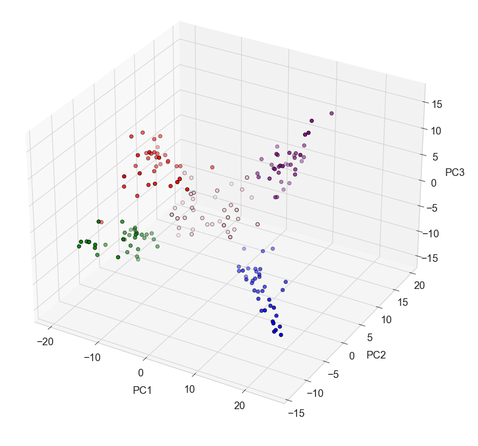
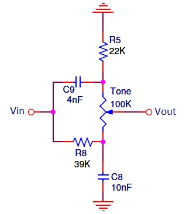
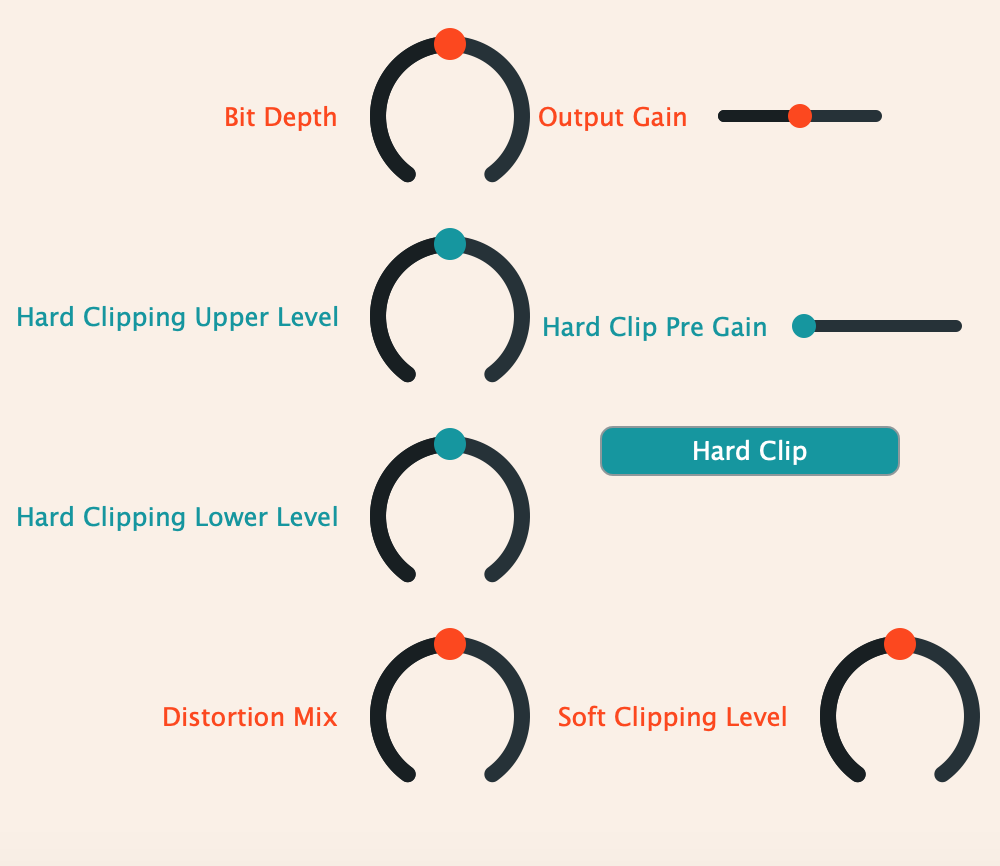
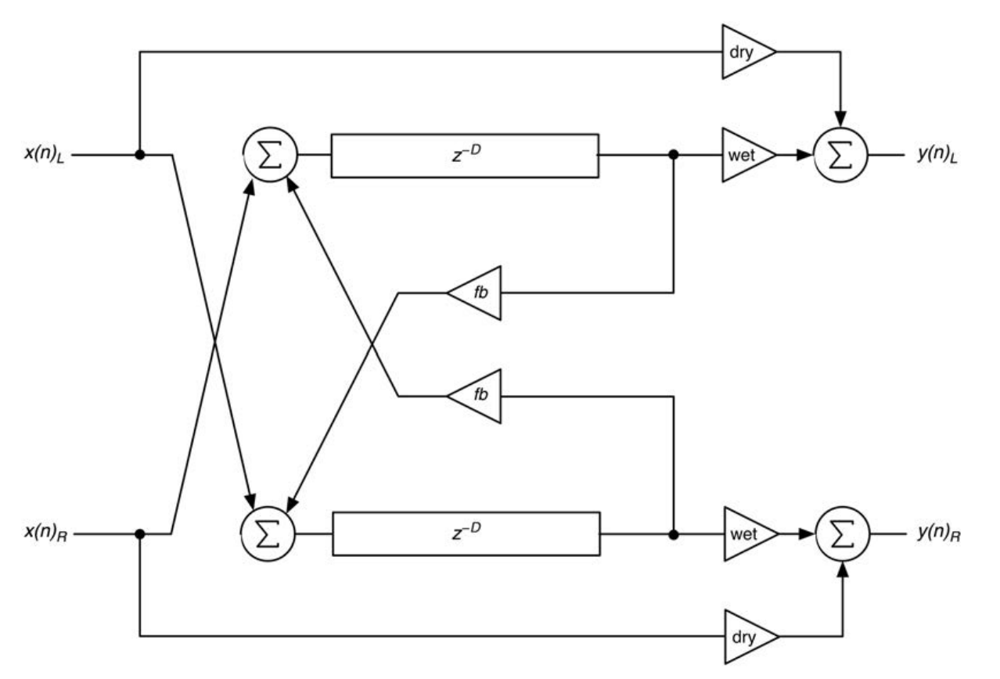
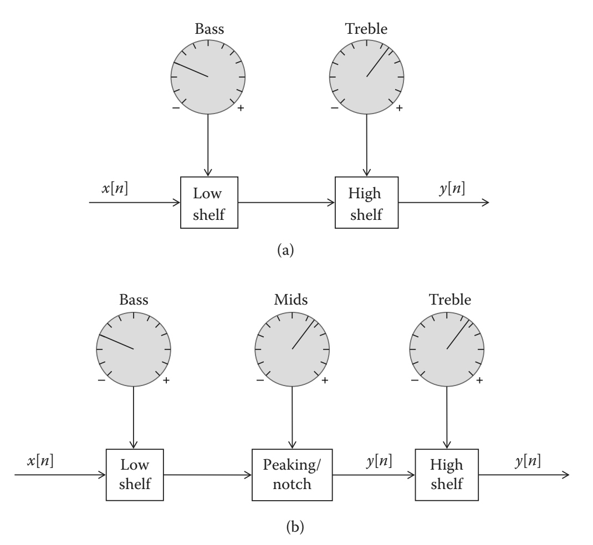
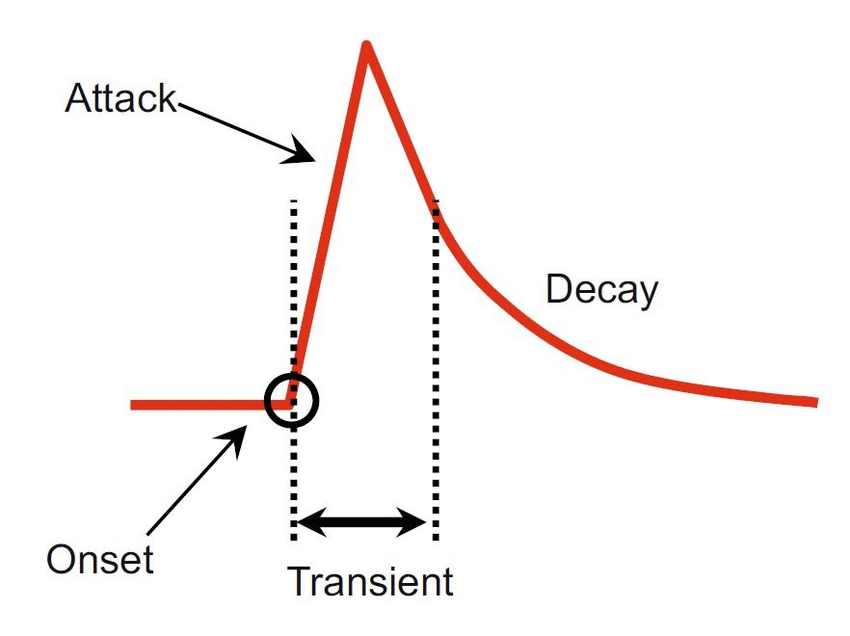

Automatic Determination of
Vocal Percussive Classes
Using Unsupervised Learning

My final Master's Project was conducted with supervision from external company 'Vochlea Music' to explore an area of research that could potentially influence future research and development of features within their flagship product 'Dubler'. Dubler is a voice-to-MIDI application within which the 'trigger' functionality allows users to trigger samples in their DAW via vocalised percussive sounds. This project involved the development of an unsupervised learning pipeline with the goal of sucessfully segmenting a set of unlabelled vocal percussive data.

This project follows the process of mapping between the analog filters that comprise the tone stage of the Big Muff Pi distortion pedal and their discrete equivalent. Starting from the analog transfer function of the high and low filters in paralell, the bilinear transform is applied to map between the analog (s-domain) and the discrete (z-domain) to obtain the digital filter co-efficients.
MatLab Prototype and JUCE VST

The first of the two JUCE/C++ effect plugins + MATLAB prototypes completed during the 'Audio Programming' module involved the prototyping and realisation of a memory-less effect (specifically distortion algorithms). The brief specified to combine distortions in both series and parallel. In this project, I combined bit reduction with full-wave rectification in series and a switchable hard/soft arc-tan clipper in parallel. The user has control over bit-depth, pre-gain and upper and lower limit for hard clipping, and alpha for arc-tan clipping which dictates the shape of the characteristic curve.
MatLab Prototype and JUCE VST

The second of the two JUCE/C++ effect plugins + MATLAB prototype completed during the 'Audio Programming' module involved the prototyping and realisation of a memory-using, delay-line effect (specifically a ping pong delay). The brief for the ping pong delay effect was taken from the second edition of Will Pickle's book 'Designing Audio Effects in C++' which specifies crossed inputs and feedback paths. In addition to the specifications outlined in the book, I implemented a tempo sync that gathers the current BPM from the DAW using the JUCE AudioPlayHead class and offers the users the ability to synchronize the delay to the tempo of their project.
With Switchable Loudness Control

This project was completed prior to the Big Muff Pi tone control project in partial fulfilment of a 'DSP for Audio Applications' module. The filter coefficients for the implementations of low-shelf, peak-notch and high-shelf are taken from transfer functions found in Joshua Reiss and Andrew McPherson’s book 'Audio Effects'. In addition to the three-band tone control, this project features a switchable loudness control implemented with a reverse a-weighting filter, designed via the frequency response FIR filter design method.
A Brief History and Current Techniques

This literature review focuses on audio onset detection and was completed in partial fulfillment of a 'Research Methods' module. The paper presents a recent history of techniques and the advancements that led to the current state-of-the-art algorithms.